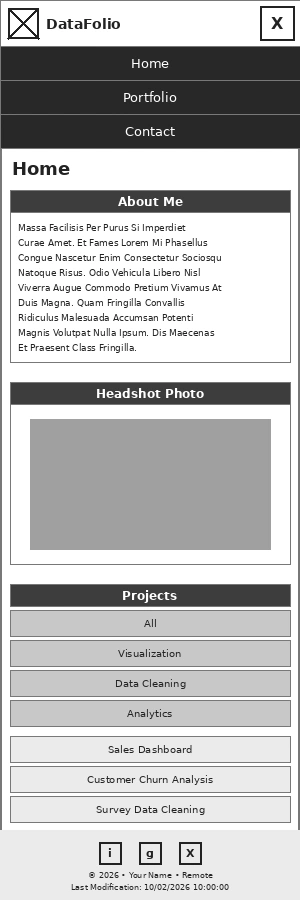
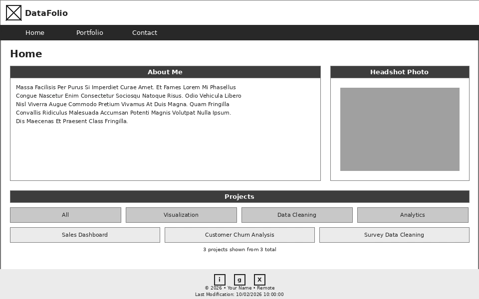

1. Site Name
DataFolio
The name "DataFolio" combines "Data" and "Portfolio" into a short, memorable brand that immediately signals what the site is for: a professional showcase of data analysis work. It sounds modern and technical while staying easy to say and remember — a good fit for a personal brand in the analytics field.
Optional domain: datafolio.dev or yournamedata.com
Why I Chose This Subject
I chose a data analyst portfolio because it's directly relevant to my career goals — I need a professional, centralized place to showcase my skills, past projects, and services to potential employers and clients. Building this site lets me demonstrate real technical ability (data visualization, dashboards, reporting) alongside the JavaScript and web development skills required for this project.
2. Site Purpose
DataFolio is a professional portfolio website showcasing data analysis skills, past projects, and available services to recruiters, hiring managers, and freelance clients. The site provides:
- Home Page (index.html): Hero section with name, title, and tagline, a brief "About Me" summary, and a snapshot grid of core skills (SQL, Python, Excel, Power BI/Tableau, statistics, data storytelling)
- Portfolio Page (portfolio.html): Displays all past data analysis projects dynamically loaded from a JSON data source, each with a title, description, tools used, key insight, and a link to the full project. Includes category filtering (visualization, data cleaning, analytics) using JavaScript
- Contact/Services Page (contact.html): Lists services offered (data cleaning, dashboard creation, reporting, predictive analysis), a contact form, email, LinkedIn link, and a downloadable resume
Dynamic Features
The site demonstrates JavaScript proficiency through:
- Data fetching from a JSON file using the Fetch API with try/catch error handling
- Dynamic content generation displaying each project with 4+ properties (title, description, tools, link)
- Category filter buttons that re-render the project grid without reloading the page
- A dark/light mode toggle stored in a data attribute for accessibility and modern UX
- DOM manipulation and event handling (clicks, filters, form submission)
- Array methods (filter, map, forEach) for processing project data
- Template literals for dynamic HTML generation
- Responsive hamburger navigation for mobile screens
3. Target Audience Scenarios
"I'm a hiring manager and want to see real examples of this person's data analysis work before scheduling an interview."
Answer: Browse the Portfolio page where every project is displayed with a short description, the tools used, and the key insight or result. Filter by project type (visualization, data cleaning, analytics) to quickly find relevant examples.
"I want to quickly understand this analyst's core skill set and experience level without reading a full resume."
Answer: The Home page's About Me section and skills grid summarize experience and tools at a glance, with a clear hero section stating title and specialty right at the top of the page.
"I'd like to hire this analyst for a short freelance project and need to know what services they offer and how to reach them."
Answer: Visit the Contact/Services page to see a list of offered services, then use the contact form or direct email/LinkedIn links to get in touch. A downloadable resume is also available there.
4. Color Schema
The color palette uses clean, professional tones associated with trust and technical credibility, while keeping strong contrast for readability and accessibility in both light and dark mode.
Deep Navy
#173F5F
Headings, navigation, primary buttons
Teal
#2A9D8F
Links, hover states, highlights
Slate Gray
#4A5568
Body text, secondary text
Cloud White
#F4F6F8
Page background, cards
Gold
#F5C518
Badges, accents, call-outs
White
#FFFFFF
Card backgrounds, button text
5. Typography
The typography pairs a clean, geometric heading font with a highly readable body font, keeping the site looking modern and technical without sacrificing legibility.
Poppins
Font Family: 'Poppins', sans-serif
Weights: 400, 600, 700
Use: All headings (H1, H2, H3), logo text, hero tagline
Inter
Font Family: 'Inter', sans-serif
Weights: 400, 500, 600
Use: Body text, navigation links, project descriptions, form fields
6. Wireframes
The wireframes demonstrate the layout structure for the home page on both mobile and desktop viewports.
Mobile View (320px - 767px)

Hamburger nav, stacked hero, single-column skills and project cards, footer
Desktop View (768px+)

Horizontal nav, hero banner, 3-column skills/project grid, footer